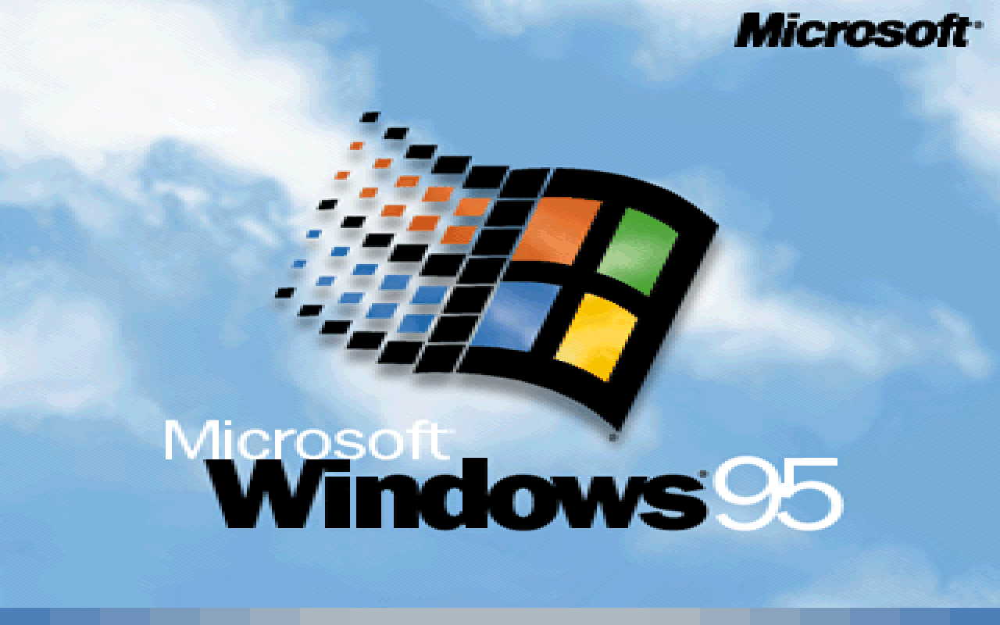

Desktop

Windows 95 ili tzv. projekt Chicago, objavljen je 15. kolovoza 1995. godine. To je prvi sustav Microsoft-ove „Windows 9x“ obitelji. Uz redizajnirano sučelje, u sustavu Windows 95 se po prvi put pojavljuju izbornik Start i radna površina, koji od tada postaju elementarno obilježje svakog budućeg sustava Windows. Za korisnike je bila izuzetno korisna funkcija spajanja i korištenja novog uređaja bez prethodne instalacije upravljačkih programa za taj uređaj, tzv. „Plug and Play“ funckija (spoji i igraj). Windows 95 je i dalje bio uvelike baziran na MS-DOS-u sedme generacije, te su se sve MS-DOS aplikacije mogle pokrenuti na sustavu Windows 95. Stabilnost sustava je drastično povećana odlukom da svaki program zauzima svoj blok memorije, te bi tako ako bi došlo do rušenja programa, sustav ostao netaknut, bez ikakvog prekida u radu. Za razliku od Windows 3.11 operacijskog sustava koji bi se srušio zajedno s programom, Windows 95 je prva verzija Windows operacijskog sustava koja sadrži Windows Explorer, program koji i danas služi za upravljanje svim datotekama na računalu. Windows 95, kao i njegovi prethodnici, ima više inačica. Nekoliko dana nakon objave originalnog sustava, prodaje se „Windows 95 Plus!“ koji sadrži neke dodatke, kao što su Internet Explorer 1.0, poboljšane medijske mogućnosti i dodatne teme. Sa sustavom Windows 95, Microsoft prelazi na ažuriranja sustava u obliku servisnih paketa (SP). Za sustav Windows 95 objavljena su ukupno dva cjelokupna servisna paketa, dok treći nije objedinjen u jednu cjelinu, iako postoje individualni dodatci. Prvi servisni paket za Windows 95, objavljen je 6 mjeseci nakon originala, a popravio je mnogo sitnih programskih nedostataka. Drugi servisni paket je donio podršku za novi hardver, te podršku za tvrde diskove veće od 2GB. Objedinjeni treći servisni paket ne postoji, nego je podijeljen na dva manja dodatka, od kojih prvi omogućava korištenje USB uređaja sa svim njihovim pogodnostima; a drugi sa sobom donosi Internet Explorer 4.0. Podrška za Windows 95 je završila krajem 2001. godine, a naslijedio ga je operacijski sustav Windows 98, 1998. godine. Važno je napomenuti da su neke komponente Windows-a 95 ostale nepromijenjene u nekoliko sljedećih verzija operacijskog sustava Windows, kao što su izbornik Start, programska traka, sustav tema i najvažnije, koncept radne površine.
Predstavljen: 1995.
Arhitektura: 16-bitna
Podrška: Završila
Stranica je kreirana u sklopu kolegija Informatički Projekt 1 na Fakultetu prirodoslovnih matematičkih i odgojnih znanosti Mostar.
FPMOZ© 2021